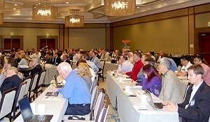
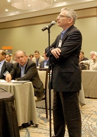

About 140 industry leaders from across the country, representing every link in the supply chain—from chip makers, to luminaire manufacturers, to material and equipment suppliers, to packagers, to luminaire testers, to the makers of testing equipment—gathered in San Diego May 7–8, 2014, to share insights, ideas, and updates at the sixth annual Solid-State Lighting Manufacturing R&D Workshop, hosted by DOE. The workshop is a key component of an initiative launched by DOE in 2009 to enhance the quality and lower the cost of SSL products through improvements in manufacturing equipment and processes, and to foster a significant manufacturing role in the U.S. This year in San Diego, attendees explored a wide range of related topics and focused on reexamining and updating the DOE SSL Manufacturing R&D Roadmap.
DOE SSL Portfolio Manager James Brodrick kicked off Day 1 by observing that "the landscape is changing" in terms of opportunities for U.S. solid-state lighting manufacturing. He noted that since launching its SSL manufacturing initiative in 2009, DOE has funded 17 SSL manufacturing R&D projects, with selections guided by DOE's Manufacturing Roadmap, and that the DOE funding for those projects ($46.6 million) was more than matched by recipient cost share ($49.7 million). Brodrick cited the growing interest in SSL street lighting, emphasizing the power of partnerships between cities, utilities, and energy-efficiency organizations and the potential advantages of combining SSL with the use of controls.
Smart Streetlights for a Smart City
Lorie Cosio-Azar of the City of San Diego's Environmental Services Department described the innovative smart-grid LED street lighting project San Diego is implementing—in partnership with San Diego Gas & Electric and CleanTECH San Diego—which will go well beyond merely lighting the streets. In addition to getting energy savings of 40–60% from retrofitting with LEDs, the city stands to cut maintenance costs by remotely monitoring streetlight performance with adaptive controls, and those controls will further reduce energy costs by facilitating dimming when full lighting is not needed. Cosio-Azar explained how such a streetlight system could one day be programmed to signal weather or safety warnings and to wirelessly read and bill water meters—and could even be integrated with next-generation homeland security applications.
A Distributor's Perspective on Lighting Market Trends
Sergio Sanchez of Grainger presented a distributor's perspective on LED lighting market trends. He observed that customers tend to be looking for paybacks of between 18–24 months, and emphasized the importance of buying from a trusted source, adding that programs such as LED Lighting Facts® and the DesignLights Consortium® (DLC) serve to legitimize product performance claims. Sanchez offered a number of recommendations for SSL manufacturers, including designing products for mass adoption and low payback initially, before building "rocket ship lighting"; using components from trusted suppliers; getting the appropriate certifications, such as LED Lighting Facts, UL, and DLC; and approaching distributors before finalizing the product design.
The Continuing Evolution of SSL Manufacturing
Mark Hand of Acuity Brands explored the shifting SSL manufacturing landscape, discussing the ways it's changed so far, how it will continue to change, what kinds of manufacturing innovations are needed to keep pace with technology advances, and how his company is ramping up for the major transformations that have already begun. Remarking that wastefulness plays right into the hands of Acuity's competitors by giving them scope to be more efficient, Hand emphasized the importance of eliminating waste in all of its forms. As an example, he noted that whereas formerly his company used 28 employees to produce 280 units per hour in 5,000 square feet of space, that process has been streamlined to 16 people producing 300 units per hour in 2,200 square feet of space. Hand said integrated lighting solutions are where things are headed, and predicted that fully intelligent networks will become the norm.
U.S. Manufacturing Status and Trends
A panel moderated by Brodrick offered a range of manufacturer perspectives on domestic SSL manufacturing, with an eye toward identifying common trends, innovative approaches, and what's needed to secure a vibrant U.S. manufacturing base for LED and OLED lighting. John Hamer of OLEDWorks, an OLED panel manufacturer, stressed the importance of partnerships in helping to advance the fledgling OLED lighting industry, noting that they speed up development, share the risks as well as the rewards, and enable smaller companies to pool resources. He advocated focusing on growing the domestic OLED lighting panel manufacturing industry, noting that this will keep the supporting component industries here as well. Hamer cited deposition as a critical part of OLED panel manufacturing and discussed the two main deposition methods: vacuum thermal evaporation, and solution processing. He recounted the reasons why the U.S. can succeed as a dominant force in manufacturing OLED deposition equipment, which will require partnerships between OLED makers, equipment makers, and government.
Eric Armour of Veeco, which manufactures metal organic chemical vapor deposition (MOCVD) equipment used in making LEDs, said his company intends to keep all of its R&D and engineering in the U.S. but uses contract manufacturers here and in Asia because of the expense of transporting such large pieces of equipment. Calling proximity to customers "a strategic priority resulting in stronger customer support, better R&D alignment, and new customer conversion," he noted that at present, most of Veeco's customers are in Asia. Armour recounted how DOE funding accelerated his company's roadmap, resulting in domestic job creation and the rapid release of an improved line of MOCVD equipment that significantly reduces epitaxy cost.
Tom Katona of NEXT Lighting reviewed the challenges and benefits of domestic manufacturing. The benefits include intellectual property protection; reduced overhead from travel, process transfer, translation, and maintaining overseas offices; easier quality control; lower inventory; and shorter lead times for customers (less than three days in some cases). The challenges include a limited supply chain for such things as thin-walled extruders, injection mold makers that are cost- and time-effective, and LED drivers; difficult colocation of suppliers; enticements (e.g., subsidies, tax breaks) by foreign governments to manufacture in their countries; and having to keep up with frequent U.S. performance-standards updates. Katona noted that "made in the U.S.A." resonates with customers, and concluded that domestic SSL manufacturing is possible for properly designed products.
John Tremblay of OSRAM Sylvania observed that trends indicate the United States is well-situated for SSL manufacturing growth. Such growth, he predicted, will use high levels of advanced technology rather than be labor-intensive, and it will also be tightly integrated with the supply chain and have the flexibility to adapt to rapid product changes. Tremblay said that for domestic manufacturing to be successful, it must have technologic process discipline, generate data effectively and make proper use of that data, and be highly integrated in the design cycle of the product. "We may not be able to do everything here, but we certainly can do some things here," he said.
Research Updates
Brodrick presented an overview of DOE's SSL manufacturing R&D portfolio, budget, and areas of focus. He observed that to date, DOE funding for SSL has totaled about $300 million and that, at Congressional direction, nearly 70% of DOE's SSL R&D budget for 2014 is aimed at manufacturing. To help guide workshop discussions about which focus areas are already well covered and which should be future priorities, Brodrick observed that so far, more than one-third of all DOE SSL R&D manufacturing projects have focused on the development of tools for LED epitaxial growth and more than one-fifth on integrated manufacturing and process control, with the rest focusing on such aspects as luminaire/module manufacturing and test and inspection equipment.
Updating the SSL Manufacturing R&D Roadmap
At the end of Day 1 of the workshop, Steve Bland of SB Consulting set the stage for the following day's efforts to update the DOE SSL Manufacturing R&D Roadmap. He reviewed feedback from an LED roundtable discussion that was held in February 2014, noting that no OLED roundtable was held this year and that, instead of splitting up into smaller "topic table" groups as the LED attendees did for part of the time, the OLED attendees would hold one open-ended group discussion for the entire time allotted to track sessions. Bland explained that the input from these track and topic table sessions will be used to update the SSL Manufacturing R&D Roadmap and guide DOE planning for Manufacturing R&D solicitations. DOE expects to publish the updated roadmap in September.

Reception and Poster Session
At the end of Day 1, attendees had additional opportunities for discussion, information exchange, and potential partnering at a lively poster session and reception sponsored by the Next Generation Lighting Industry Alliance (NGLIA), an alliance of for-profit corporations formed to accelerate SSL development and commercialization through government-industry partnership. The reception featured posters on DOE-funded SSL manufacturing R&D projects, plus a number of hands-on tabletop exhibits of SSL products demonstrating innovative materials and design for manufacturing. The 2014 Project Portfolio provides more on each of the current DOE SSL projects.
LED Track Sessions
The LED track sessions began with a panel discussion on LED phosphors, moderated by Bland and featuring Ashfaq Chowdhury of GE, Yi-Qun Li of Intematix, David DeShazer of Dow Corning, and Jim Neff of Philips Lumileds. They reviewed progress in the manufacturing and characterization of LED phosphor materials, as well as the challenges associated with phosphor application. The manufacturing of LED phosphors is definitely an area where the U.S. can have an edge. With remote phosphor manufacturing, the small volumes that come with early adoption comprise a significant hurdle in bringing the cost down. The use of silicones in conjunction with phosphors has a number of advantages but also requires making the right choices. Color converter solutions account for a significant portion of the cost of packaged LEDs, and variations in phosphor materials lead to considerable and costly waste.
Brian Dotson of the National Energy Technology Laboratory (NETL) introduced presentations on three DOE-funded LED lighting R&D projects. Chris Bohler of Eaton Cooper Lighting discussed the manufacturing of integrated, low-cost, high-performance LED luminaires, observing that LED board costs are inflating on a relative basis and can be eliminated by integrating a thick-film manufacturing process. Paul Fini of Cree described his company's work to develop a scalable, versatile light-module architecture that can enable high optical and thermal efficiency, reduced LED count, fewer mechanical piece parts, and simplified integration and assembly. Mark McCord of KLA-Tencor talked about his company's progress in developing an advanced hot test tool to provide the industry with a pathway to one or two MacAdam ellipses of color accuracy, resulting in lower capital costs to manufacturers and improving product yield.
A panel on manufacturing for color-point consistency, moderated by Bland, featured Yan Rodriguez of Acuity Brands, Rohit Patil of Xicato, Lynn Davis of RTI International, and Eric Haugaard of Cree. Color consistency focuses on the apparent difference in color quality of the light output, both initially and over time. The light sources (whether LEDs, chip-on-board, or remote-phosphor engines) and the luminaire materials (reflectors, enclosures, lenses, filters) need to be manufactured and matched to achieve color consistency. Temperature must also be tightly controlled, as light sources shift with temperature, which requires special attention to heat sinking. And power delivery must also be controlled, as shifts occur with changes in current. Accelerated testing can help with the understanding of potential failure modes, but acceleration factors for these tests are still being determined. Understanding of the factors affecting color shift is still emerging, and standards, models, and test methods are being developed. Acceptable "born-on" color consistency is possible today.
On Day 2 of the workshop, LED attendees split up into small groups to discuss a variety of topics considered key to furthering SSL technology advances, with each table focusing on a specific R&D topic to allow for in-depth consideration of related issues.
OLED Track Sessions
The OLED track sessions began with presentations on three DOE-funded OLED lighting R&D projects, which were introduced by moderator Joel Chaddock of NETL. Mike Hack of Universal Display Corporation and Barry Young of the OLED Association discussed the development of an OLED lighting cost model to enable growth and market adoption—noting that the properties of OLEDs make them ideal for personal lighting, which has a much higher application efficiency than remote lighting, and that the use of OLED task lighting could save considerable energy while costing less. John Hamer of OLEDWorks described his company's progress in developing novel approaches for vaporization, control, and distribution of organic vapor for use in the manufacturing of OLED lighting, which will improve material usage efficiency, result in higher throughput, enable the use of thermally sensitive materials, and reduce capital costs for deposition machines. Cheng-Hung Hung of PPG described a project to develop a large-area integrated substrate for OLED lighting, using inexpensive "float" glass; internal extraction layer trials are in progress, with significant improvement of embedding and better understanding of the challenges.
A panel moderated by Norman Bardsley of Bardsley Consulting featured Brodrick, Marc Ledbetter of PNNL, and James Benya of Benya Burnett Consultancy. Brodrick provided a closer look at DOE SSL market-support activities, including CALiPER, LED Lighting Facts, GATEWAY, the Next Generation LuminairesTM design competition, and the Technical Information Network for Solid-State Lighting. Ledbetter discussed lessons learned from the market introduction of CFLs and the early introduction of LED lighting products, both of which are the subject of special DOE reports. Emphasizing that a new lighting technology only gets one chance to build a long-lasting, widespread, positive reputation, he recommended working to vigorously define OLED technology to customers as desirable and high-performance, but cautioned that manufacturers that put out poor products can ruin things for everyone. Benya shared a lighting designer's perspective on opportunities for OLEDs, saying that to achieve acceptance, OLED lighting must be sufficiently efficacious, free of technical glitches, and cost-effective, and must stress the unique advantages of OLED technology, such as light weight, ease of installation, and ability to be integrated into architecture.
A panel moderated by Lisa Pattison of SSLS Inc. explored OLED panel manufacturing and trends and featured Hongmei Zhang of Plextronics/Solvay, Dennis Slafer of Microcontinuum, Larry Sadwick of InnoSys, and Tom Trovato of Trovato Manufacturing. Focusing on the substrate, Zhang observed that regarding the hole-injection layer (HIL), the overriding drivers for solution processing are cost reduction, process simplification, and defect reduction. She related a "wish list" for HIL properties that included tunable resistivity, high transparency with ultralow absorption, a high index of refraction desirable for light out-coupling, and a thick HIL for passivation and planarization of defects. Slafer discussed the development of an enhanced flexible substrate for OLED deposition that, while lowering costs, addresses light trapped in OLED device layers and reflected in the substrate, and provides an enhanced transparent conductor. Sadwick talked about the development of smart power supplies and drivers for OLEDs, noting that they communicate power in and out, make OLEDs more interactive, facilitate both wireless and wired control and monitoring, and enable mood-modifying color change. Trovato described the improvements his company is making to its deposition equipment. He stressed the need to put competitive OLED lighting products on the market right away, noting the presence at the workshop of an OLED manufacturing "dream team" that could reduce the cost of the substrate, conductive grid, HIL, and stack.
OLED attendees continued their discussions with more in-depth conversations on the topics raised in the OLED track panels, and the implications for priority tasks, metrics, and goals in the Roadmap. These open-discussion opportunities were moderated by Lisa Pattison and Bardsley.
Global Market Perspective
Philip Smallwood of Strategies Unlimited examined global market trends for LED lamps, luminaires, and packaged LEDs. He said the LED lamp market is forecasted to grow 21%, to $12.2 billion, in 2018, but that incumbent technologies are still very important—for example, fluorescent lamps make up 25% of all lamp sales globally and are formidable competition because they're long-lived, cheap, efficient, and known to the consumer. "LED is a hard sell for certain applications, and that's something that needs to be understood by the industry," Smallwood said. As for the LED luminaire market, he said it's forecasted to grow 12%, to $21.3 billion, in 2018, with commercial, industrial, outdoor, and architectural applications leading the way.
New Manufacturing Materials and Methods
A final panel moderated by Morgan Pattison of SSLS Inc. explored new manufacturing methods and materials that could apply to SSL production. Seth Coe-Sullivan of QD Vision discussed the use of quantum dots instead of conventional phosphors in the manufacturing of LEDs. He explained that quantum dots are synthetically grown inorganic semiconductors that can be 20% more energy-efficient than conventional phosphors, and that they can result in better color control because the wavelength is correlated to the size of the nanoparticle—which means there's no need to rely on color filters, so there's higher throughput and better optical efficiency. Coe-Sullivan noted that quantum dots are better for the environment; e.g., over the product's entire life cycle, about ten times more cadmium is saved than is consumed.
Boris Kobrin of Rolith described a nano-web electrode manufacturing process developed by his company, which involves metal mesh and could be used to reduce the cost of making OLED panels. The metal mesh is created inexpensively and with high throughput, using a proprietary optical lithography technology called rolling mask lithography, which employs phase-shift optical effects and a cylindrically shaped photo mask. Kobrin explained that the technology provides patterning on large areas with low cost and high resolution, and can be implemented in roll-to-roll and continuous-processing modes. He said throughput could be as high as one square meter per minute, with a production cost as low as $5 per square meter
Michael Tischler of Cooledge Lighting discussed and demonstrated his company's line of commercially available flexible sheets of low-power LEDs. These light sheets feature large arrays of very small LEDs that are spread out over a large area and are operated at low drive currents of less than 25 milliamps. This, Tischler explained, makes optics unnecessary to distribute the light, and allows for the use of individual emitters that have very low lumen output, which results in low glare. And, he added, because the LEDs are being under-driven, they have good reliability and long lifetime. Tischler noted that the light sheets require no thermal management beyond what's on the sheet. "We're trying to eliminate constraints for materials and locations where you can put lighting," he said.
Brodrick concluded the two-day workshop by thanking attendees for their input and participation. He noted an additional DOE SSL workshop in 2014—the SSL Market Introduction Workshop, to be held in November—and encouraged attendees to stay apprised of DOE SSL program activities via the SSL website.